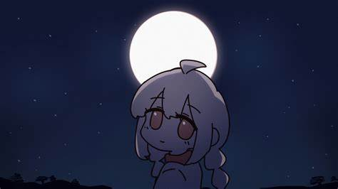
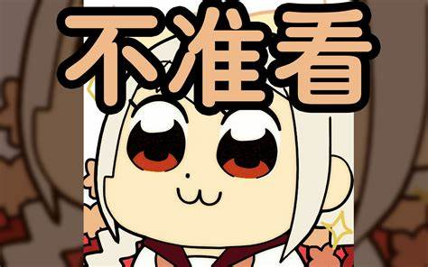
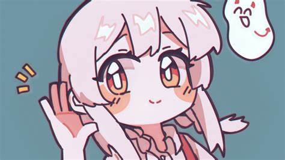

代表作品
- 《我家里有蜘蛛！！！》
- 《爆炸电台BOOM~》
- 《我制作了免费的养宠物游戏！》
- 《好玩到忘记时间！永远会回应你的好奇心的《动物井》实况》
warma正在看着你...



音乐作品
- 《一话一世界（方言合唱版）》
- 《我家里有蜘蛛！！！》
- 《I really ∞（翻自Carly Rae Jepsen）》
Warma也有许多音乐作品，包括翻唱和原创歌曲。
关于Warma
Warma，本名沃玛，别名忆雨等，是一位在B站非常知名的UP主，以其多才多艺和独特的个人风格深受粉丝喜爱。
Warma的视频类型非常广泛，包括动画与手书、歌唱与配音、游戏实况与解说、杂谈与生活分享等，视频各环节内容几乎皆为一人完成，具有强烈的个人风格。